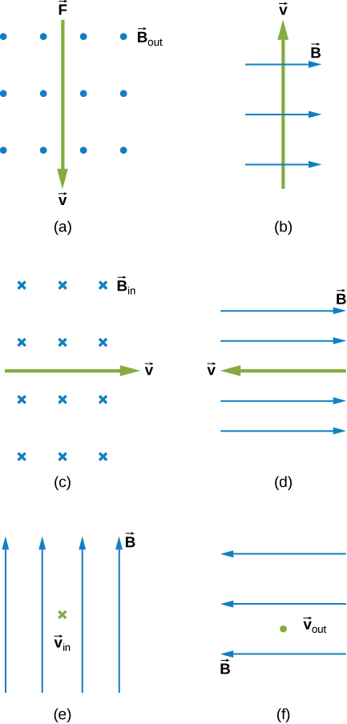
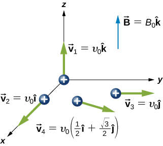
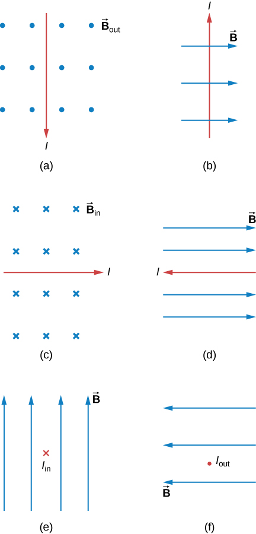
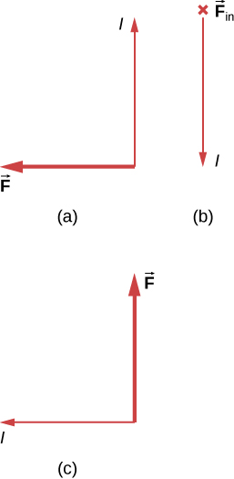

Phy 222 Homework 8: Magnetic Fields
Problem 8.1
What is the direction of the magnetic force on a positive charge that moves as shown in each of the six cases?

Problem 8.2
What is the direction of the velocity of a negative charge that experiences the magnetic force shown in each of the three cases, assuming it moves perpendicular to B?

Problem 8.3
An electron is projected into a uniform magnetic field \(\mathbf{B} = (0.5\hat{i} + 0.8\hat{k}) \, \mathrm{T}\) with a velocity \(\mathbf{v} = (3.0\hat{i} + 4.0\hat{j}) \times 10^6 \, \mathrm{m/s}\). What is the magnetic force on the electron?
Problem 8.4
Four different proton velocities are given. For each case, determine the magnetic force on the proton in terms of \(e\), \(v_0\), and \(B_0\).

Problem 8.5
Aircraft sometimes acquire small static charges. Suppose a supersonic jet has a \(0.500 \, \mu\mathrm{C}\) charge and flies due west at a speed of \(660. \, \mathrm{m/s}\) over Earth’s south magnetic pole, where the \(8.00 \times 10^{-5} \, \mathrm{T}\) magnetic field points straight down into the ground.
- What are the direction and the magnitude of the magnetic force on the plane?
- Discuss whether the value obtained above implies this is a significant or negligible effect.
Problem 8.6
A cosmic-ray electron moves at \(7.5 \times 10^6 \, \mathrm{m/s}\) perpendicular to Earth’s magnetic field at an altitude where the field strength is \(1.0 \times 10^{-5} \, \mathrm{T}\). What is the radius of the circular path the electron follows?
Problem 8.7
An alpha-particle (\(m = 6.64 \times 10^{-27} \, \mathrm{kg}\), \(q = 3.2 \times 10^{-19} \, \mathrm{C}\)) travels in a circular path of radius \(25 \, \mathrm{cm}\) in a uniform magnetic field of magnitude \(1.5 \, \mathrm{T}\).
- What is the speed of the particle?
- What is the kinetic energy in electron-volts?
- Through what potential difference must the particle be accelerated in order to give it this kinetic energy?
Problem 8.8
What is the direction of the magnetic force on the current in each of the six cases?

Problem 8.9
What is the direction of the magnetic field that produces the magnetic force shown on the currents in each of the three cases, assuming B is perpendicular to I?

Problem 8.10
A dc power line for a light-rail system carries \(1000 \, \mathrm{A}\) at an angle of \(30.0^\circ\) to Earth’s \(5.0 \times 10^{-5} \, \mathrm{T}\) field.
- What is the force on a \(100 \, \mathrm{m}\) section of this line?
- Discuss practical concerns this presents, if any.
Problem 8.11
A $150$-turn square loop of wire \(18.0 \, \mathrm{cm}\) on a side that carries a \(50.0 \, \mathrm{A}\) current in a \(1.60 \, \mathrm{T}\) field?
- What is the maximum torque felt by the loop?
- What is the torque when \(\theta\) is \(10.9^\circ\)?
Problem 8.12
A wire of length \(1.0 \, \mathrm{m}\) is wound into a single-turn planar loop. The loop carries a current of \(5.0 \, \mathrm{A}\), and it is placed in a uniform magnetic field of strength \(0.25 \, \mathrm{T}\).
- What is the maximum torque that the loop will experience if it is square?
- If it is circular?
- At what angle relative to \(\mathbf{B}\) would the normal to the circular coil have to be oriented so that the torque on it would be the same as the maximum torque on the square coil?
Problem 8.13
A proton has a magnetic field due to its spin. The field is similar to that created by a circular current loop of radius \(0.65 \times 10^{-15} \, \mathrm{m}\) with a current of \(1.05 \times 10^4 \, \mathrm{A}\). Find the maximum torque on a proton in a \(2.50 \, \mathrm{T}\) field. (This is a significant torque on a small particle.)
Problem 8.14
A physicist is designing a cyclotron to accelerate protons to one-tenth the speed of light. The magnetic field will have a strength of \(1.5 \, \mathrm{T}\). Determine
- the rotational period of the circulating protons.
- the maximum radius of the protons’ orbit.
Problem 8.15
The magnetic field in a cyclotron is \(1.25 \, \mathrm{T}\), and the maximum orbital radius of the circulating protons is \(0.40 \, \mathrm{m}\).
- What is the kinetic energy of the protons when they are ejected from the cyclotron?
- What is this energy in \(\mathrm{MeV}\)?
- Through what potential difference would a proton have to be accelerated to acquire this kinetic energy?
- What is the period of the voltage source used to accelerate the protons?
- Repeat the calculations for alpha-particles.
Problem 8.16
A velocity selector in a mass spectrometer uses a \(0.100 \, \mathrm{T}\) magnetic field.
- What electric field strength is needed to select a speed of \(4.0 \times 10^6 \, \mathrm{m/s}\)?
- What is the voltage between the plates if they are separated by \(1.00 \, \mathrm{cm}\)?
\(~\)